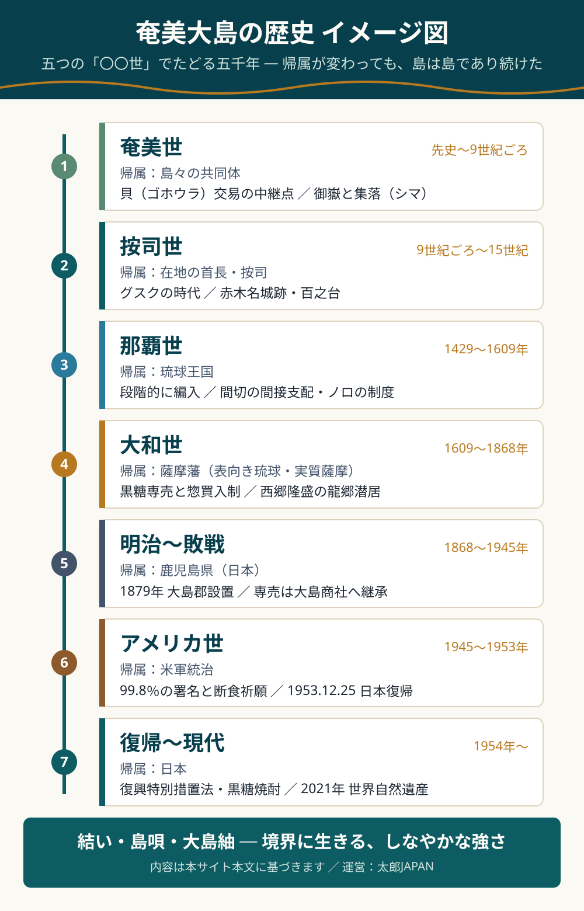

〇〇世を一つの項目に絞る
読みたい時代をプルダウンで選ぶと、その「〇〇世」の章だけを表示します。「すべての〇〇世」を選ぶと全章が戻ります。
現在：すべての時代を表示しています
イメージ図 ― 五つの「〇〇世」でたどる五千年
奄美大島の通史を1枚にまとめた図解です。時代ごとに「帰属」と代表的な出来事を示しました。帰属が変わるたびに島の暮らしも変わりましたが、結い・島唄・大島紬に代表される島の文化は受け継がれてきました。

テーマ別に読む
関心のあるテーマから入る入口です。選ぶと関係の深い章へ移動します（「〇〇世」の絞り込みと連動するテーマもあります）。
奄美世 ―― 貝の道が結んだ島々
先史〜9世紀ごろこの章の3行まとめ ・ 読了目安 約1分
- ゴホウラ（巻貝）の交易で、九州と南の島々を結ぶ「海の道」の中継点だった
- 御嶽（うたき）を中心に集落（シマ）が形づくられ、血縁を基盤に助け合う社会だった
- 階級社会以前の村落共同体の時代を、地元では「奄美世」と呼ぶ
奄美群島の人の営みは、約6,000〜5,000年前の縄文時代にまで遡る。喜界島の赤連遺跡や中里貝塚など、各地に貝塚が残されている。この時代の奄美を特徴づけるのは「貝の交易」である。沖縄方面で採れるゴホウラ（巻貝）は腕輪などの装身具の素材として珍重され、奄美は九州と南の島々を結ぶ交易の中継点だった。いわば奄美は、太古から「海の道」の結節点だったのである。
古代に入ると、奄美は日本の律令国家の視野にも入ってくる。『日本書紀』などに現れる南島への言及が奄美を指すとする説があり、8世紀には遣唐使船の寄港・補給の島としても位置づけられたとされる。ただし824年（天長元年）、多禰国が大宰府の所管から大隅国に移されると本土との公的な交流は細り、島は次第に独自の歩みを強めていく。この、階級社会以前の村落共同体の時代を、地元では「奄美世」と呼ぶ。御嶽（うたき）を中心に集落（シマ）が形づくられ、男性が行政を、女性が祭祀を担い、血縁を基盤に助け合う社会だった。
按司世 ―― 首長たちの時代
9世紀ごろ〜15世紀この章の3行まとめ ・ 読了目安 約1分
- 在地の首長・按司（アジ）が各地で勢力を蓄え、階級社会が形成された
- 山頂や台地に城（グスク）が築かれ、赤木名城跡などが面影を残す
- 沖縄本島の三山統一と琉球王国の成立へつながっていく時代
8〜9世紀以降、在地の首長である按司（アジ）が各地で勢力を蓄え、階級社会が形成されていく。これが「按司世」である。喜界島の百之台は、全島の按司たちが集まって会議を開いた場所と伝えられる。奄美大島でも山頂や台地の上に城（グスク）が築かれるようになり、赤木名城跡（奄美市笠利町）などがその面影を残す。
この頃、沖縄本島では按司たちが北山・中山・南山の三勢力に統合されつつあった。奄美の島々もその影響圏に組み込まれていき、やがて中山が三山を統一して琉球王国が成立すると、奄美の編入が段階的に進む。
那覇世 ―― 琉球王国の時代
1429年〜1609年この章の3行まとめ ・ 読了目安 約1分
- 1429年から1466年にかけて、奄美群島は段階的に琉球王国へ編入された
- 「間切（まぎり）」による間接支配が行われ、ノロ（祝女）の制度が根づいた
- 喜界島は10年以上抗戦したが、1466年に尚徳王の親征で陥落した
奄美群島の琉球王国への編入は、一度ではなく段階的に進んだ。1429年に沖永良部島と与論島が王国の領土となり、1447年には奄美大島が統治下に入った。最後まで残ったのが喜界島である。南海交易の利権を持つ喜界島は財力・武力ともに強く、琉球軍の攻撃に10年以上抗戦したが、1466年、第七代尚徳王自らが兵2,000余・兵船50余艘を率いて遠征し、ついに陥落した。琉球王国の正史『球陽』には、たび重なる遠征の失敗に王が怒り、親征を決意した経緯が記されている。
こうして奄美群島全域が琉球王国の領土となり、「那覇世」が始まる。王国は各島を「間切（まぎり）」に行政区分し、島出身の役人を登用する間接支配を行った。1446年には農産物の年貢納入や城・道路造りの夫役が命じられている。この時代に、集落の祭祀を司るノロ（祝女）の制度が王府の公的な制度として奄美にも根づき、奄美の精神文化の骨格が形づくられた。
大和世 ―― 薩摩の直轄と黒糖の時代
1609年〜1868年この章の3行まとめ ・ 読了目安 約3分
- 1611年、奄美群島は薩摩藩の蔵入地となり、表向き琉球・実質薩摩の二重の帰属が始まった
- 換糖上納令と惣買入制による黒糖専売は「黒糖地獄」と呼ばれ、島民は蘇鉄地獄にも苦しんだ
- 西郷隆盛が1859年から龍郷に潜居し、愛加那と結婚したのもこの時代
1609年（慶長14年）、薩摩藩は琉球へ侵攻した。目的は対明貿易の利潤と藩財政の立て直しだった。1611年（慶長16年）、奄美群島は正式に琉球から割譲され、薩摩藩の領土（蔵入地）となる。ただし対外的には「琉球の内」と装うことが求められた。奄美はここから約260年、表向き琉球、実質は薩摩という二重の帰属を背負うことになる。1623年には「鬼界島置目条々」により統治方針が示され、代官（仮屋）を頂点とする支配体制が固められた。1801年には藩の出先機関である仮屋が名瀬に移転し、名瀬は奄美支配の拠点として発展していく。
支配の核心となったのが砂糖である。元禄年間（1690年代）に薩摩藩は沖縄から製糖技術を導入し、1695年には製糖の監督にあたる「黍検者（きびけんじゃ）」を島に派遣した。そして1745年（延享2年）の「換糖上納令」――資料によっては1747年のこととするものもある――で、年貢を米ではなく黒糖に換算して納める制度が始まる。稲作からサトウキビへの転作が一気に進み、島の食糧自給は崩れていった。
さらに1830年（文政13年・天保元年）には「惣買入制（そうかいいれせい）」が敷かれる。生産した黒糖の私売は禁じられ、納税分を除く余りの黒糖は藩が独占的に、しかも安値で買い上げた。買い上げの対価は現金ではなく、割高な食料・日用品と引き換える「羽書（はがき）」と呼ばれる商品券的な仕組みだった。黒糖は大阪の問屋に卸され、その超過利潤は、約500万両ともいわれる薩摩藩の借財返済と財政再建の柱となった。弘化元年（1844年）には藩の借財は解消され備蓄まで生まれたとされるが、その陰で島民は飢饉のたびに毒抜きを要する蘇鉄（そてつ）の実や幹を食べて命をつなぐ「蘇鉄地獄」に苦しんだ。密売には死罪が科された時代もあった。この過酷な黒糖専売の時代は、後に「黒糖地獄（砂糖地獄）」と呼ばれる。
一方で、薩摩支配は奄美に忘れがたい客人ももたらした。安政の大獄で幕府に追われた西郷隆盛である。西郷は1859年1月から1862年1月まで、龍郷に潜居した。彼は龍家の娘・愛加那（あいかな）と結婚し、長男・菊次郎と長女・菊草をもうけた。奄美での約3年は西郷の生涯でも例外的に穏やかな歳月だったと伝えられる。1862年に召還されて帰藩した後、西郷は再び遠島となり徳之島・沖永良部島に送られるが、奄美の人々と西郷の結びつきは今も龍郷の地に色濃く残っている。
文化の面では、過酷な支配の下でこそ奄美の精神性が結晶化した。公的祭祀のノロに対し、民間の祈祷や相談を担うユタは、取り締まりの目をくぐりながら島民の心の支えであり続けた。労働力を融通し合う「結い（ゆい）」の相互扶助は、生き抜くための共同体の知恵だった。島唄は労働や哀しみ、支配への静かな抵抗を歌い継ぎ、大島紬は泥染めと締機の技法を磨き上げ、年貢や換金の手段としても島の経済を支えた（紬の起源自体は古く、その成立年代には諸説がある）。
明治から敗戦まで ―― 県政下でも続いた砂糖の構図
1868年〜1945年この章の3行まとめ ・ 読了目安 約1分
- 1879年に大島郡が置かれ、奄美群島は鹿児島県の行政下に正式に組み込まれた
- 黒糖の専売体制は「大島商社」に形を変えて引き継がれた
- 産業は大島紬と砂糖への依存が続き、軍事拠点としても位置づけられた
明治維新と廃藩置県を経て、1879年（明治12年）4月、奄美群島に大島郡が置かれ、鹿児島県の行政下に正式に組み込まれた。しかし黒糖の専売体制は、県が設立した専売公社「大島商社」に形を変えて引き継がれ、不公正な取引の構図はすぐには改まらなかった。島の産業は大島紬と砂糖への依存が続き、昭和に入ると奄美大島は本土防衛の軍事拠点としても位置づけられ、戦時体制の圧迫を受けることになる。
アメリカ世 ―― 8年間の分離と、島民が勝ち取った復帰
1945年〜1953年この章の3行まとめ ・ 読了目安 約2分
- 1946年、本土から行政分離され米軍統治が始まり、通貨はB円、物資は不足した
- 泉芳朗らの復帰運動は、14歳以上の島民の99.8%の署名と断食祈願へ広がった
- 1953年12月25日午前0時、奄美群島は日本へ復帰した
第二次世界大戦の敗戦後、1946年、GHQの指令により北緯30度以南の島々は日本本土から行政分離され、奄美群島は米軍の統治下に置かれた（この時代を「アメリカ世」と呼ぶこともある）。本土との往来は断たれ、通貨はB円となり、物資と食糧は不足した。軍事的価値の乏しい奄美は、物資も資金も沖縄に集中する中で取り残された、と当時を回顧する声は多い。
だが島民は沈黙しなかった。1951年2月14日、「奄美大島日本復帰協議会」が結成され、徳之島出身の詩人・泉芳朗が議長に就いた。署名運動は約3か月で、当時の14歳以上の島民の99.8%の署名を集めたと伝えられる。同年8月1日、泉は名瀬の高千穂神社にこもり、120時間（5日間）の断食祈願を決行。詩「断食悲願」にその決意を刻んだこの行動は群島各地に広がり、復帰運動は非暴力のまま全島一丸の運動へと高まっていく。
1953年8月8日、来日したダレス米国務長官が奄美群島の返還声明を発表。そして1953年12月25日午前0時、奄美群島は正式に日本へ復帰した。クリスマスの日に帰ってきた島々――この日は今も奄美で最も大切な記念日の一つであり、名瀬のおがみ山公園には復帰記念碑と泉芳朗の胸像・詩碑が立つ。住民自身の運動が帰属を動かしたこの復帰は、19年後の沖縄復帰に先立つものでもあった。
復帰から現代 ―― 振興法、黒糖焼酎、そして世界自然遺産
1954年〜この章の3行まとめ ・ 読了目安 約1分
- 1954年に復興特別措置法が制定され、社会基盤の整備が進んだ
- 奄美群島でのみ製造が認められる黒糖焼酎の生産もこの頃始まった
- 2021年7月26日、ユネスコの世界自然遺産に登録された
復帰の翌1954年、「奄美群島復興特別措置法」（現在の奄美群島振興開発特別措置法）が制定され、港湾・道路など社会基盤の整備が国の支援のもとで進められた。復帰直後には、酒税法上の特例により奄美群島でのみ製造が認められる黒糖焼酎の生産も始まっている。かつて島を苦しめた黒糖が、今度は島だけに許された特産品へと姿を変えたことは、奄美史の皮肉な転回と言えるだろう。
2017年には奄美群島国立公園が誕生し、2021年7月26日、奄美大島と徳之島は沖縄島北部・西表島とともにユネスコの世界自然遺産に登録された。アマミノクロウサギに代表される固有種の豊かさ――大陸とつながり、離れ、島として独自の進化を遂げた生物相――が評価されたものである。島が「境界」であり続けた地理そのものが、今度は世界の宝として認められた。
奄美のアイデンティティ ―― 境界に生きるということ
この章の3行まとめ ・ 読了目安 約1分
- 奄美の歴史を貫くのは「どこにも完全には属さなかった」という経験
- 結い・ノロとユタ・島唄と大島紬が、自らの足場を内部につくり続けた
- 99.8%の署名と断食で復帰を勝ち取った1953年の記憶が、その到達点
奄美の歴史を貫くのは、「どこにも完全には属さなかった」という経験である。琉球に属しながら薩摩に支配され、日本に属しながら8年間切り離された。そのたびに島民は、与えられた帰属をただ受け入れるのではなく、結いの共同体、ノロとユタの信仰、島唄と大島紬の文化によって自らの足場を内部につくり続けてきた。99.8%の署名と断食で復帰を勝ち取った1953年の記憶は、その到達点である。
本土でも沖縄でもない場所に立ち続けたこと。それが奄美の弱さではなく、しなやかな強さの源泉なのだと思う。奄美世から数えて五千年あまり、この島の歴史は今も、島に暮らす人々の日々の中で続いている。
奄美大島の歴史 年表
上のプルダウンで「〇〇世」を選ぶと、年表もその時代の出来事だけに絞り込まれます。
- 約6000〜5000年前
- 縄文時代の貝塚文化。ゴホウラ交易の中継点に
- 824年
- 多禰国が大隅国へ移管。本土との公的交流が細る
- 1429年
- 沖永良部島・与論島が琉球王国の領土に
- 1447年
- 奄美大島が琉球王国の統治下に入る
- 1466年
- 尚徳王が喜界島へ親征。奄美群島全域が琉球領に
- 1609年
- 薩摩藩が琉球へ侵攻
- 1611年
- 奄美群島が琉球から割譲され、薩摩藩の蔵入地に
- 1695年
- 製糖監督の「黍検者」が島に派遣される
- 1745年（諸説あり）
- 換糖上納令。年貢を黒糖で納める制度が始まる
- 1801年
- 薩摩藩の仮屋が名瀬へ移転
- 1830年
- 惣買入制。黒糖の私売禁止と藩の独占買上げ（黒糖地獄）
- 1859〜1862年
- 西郷隆盛が龍郷に潜居。愛加那と結婚
- 1879年
- 大島郡が置かれ、鹿児島県の行政下に
- 1946年
- 北緯30度以南が行政分離。米軍統治が始まる
- 1951年
- 日本復帰協議会が結成。泉芳朗の断食祈願
- 1953年12月25日
- 奄美群島が日本へ復帰
- 1954年
- 奄美群島復興特別措置法が制定。黒糖焼酎の生産も始まる
- 2017年
- 奄美群島国立公園が誕生
- 2021年7月26日
- ユネスコ世界自然遺産に登録
人物・用語カード
本文に登場する人物と用語の小さな解説です。詳しくは本文の該当章へ。
訪ねられる史跡リスト
本文に登場する場所のうち、現地で辿れる史跡をまとめました。所在地・場所の確認は各リンク先でご確認ください（訪問前には公開状況の確認をおすすめします）。
島別に読む（入口）
奄美群島の島ごとのページへの分割は今後の課題です。現時点では、本編の中で各島に触れた記述への入口をまとめました。
よくある質問
奄美大島が日本に復帰したのはいつですか？
1953年12月25日午前0時です。第二次大戦後、奄美群島は米軍統治下に置かれましたが、泉芳朗らが率いた復帰運動（14歳以上の島民の99.8%が署名したと伝えられます）などを経て、沖縄より19年早く日本へ復帰しました。
奄美大島の「黒糖地獄」とは何ですか？
薩摩藩支配下で、黒糖の専売と過酷な上納が強いられた時代の呼び名です。1830年の惣買入制では黒糖の私売が禁じられ、藩が安値で独占的に買い上げました。飢饉のたびに島民は蘇鉄を食べて命をつなぐ「蘇鉄地獄」にも苦しみました。
奄美大島が薩摩藩の支配下に入ったのはいつですか？
1609年に薩摩藩が琉球へ侵攻し、1611年に奄美群島は琉球から割譲されて薩摩藩の領土（蔵入地）となりました。以後約260年間、表向きは琉球、実質は薩摩という二重の帰属が続きました。
奄美大島が世界自然遺産に登録されたのはいつですか？
2021年7月26日です。奄美大島と徳之島が、沖縄島北部・西表島とともにユネスコの世界自然遺産に登録されました。アマミノクロウサギに代表される固有種の豊かな生物相が評価されました。
「アメリカ世」とは何ですか？
第二次世界大戦後、1945年から1953年の日本復帰まで、奄美群島が米軍統治下に置かれた時代を指す地元の呼び名です。本土との往来は断たれ、通貨はB円となりました。島民の復帰運動を経て、1953年12月25日に日本へ復帰しました。
奄美大島の日本復帰はなぜ12月25日だったのですか？
1953年8月8日、来日したダレス米国務長官が奄美群島の返還声明を発表し、同年12月25日午前0時、奄美群島は正式に日本へ復帰しました。クリスマスの日に帰ってきた島々――この日は今も奄美で最も大切な記念日の一つです。
参考資料
本稿の作成にあたっては、一般社団法人あまみ大島観光物産連盟の奄美の歴史をはじめとする公開資料を参照し、年号・事実関係を確認しました。さらに深く知りたい場合は、奄美市立奄美博物館や鹿児島県立奄美図書館の所蔵資料が確かな入口になります。
注記：換糖上納令の年次（1745年／1747年）、大島紬の起源、署名率99.8%の算定根拠など、本稿には資料により記述が分かれる点が含まれます。より深く知りたい場合は、奄美市立奄美博物館や県立奄美図書館の資料が確かな入口になります。